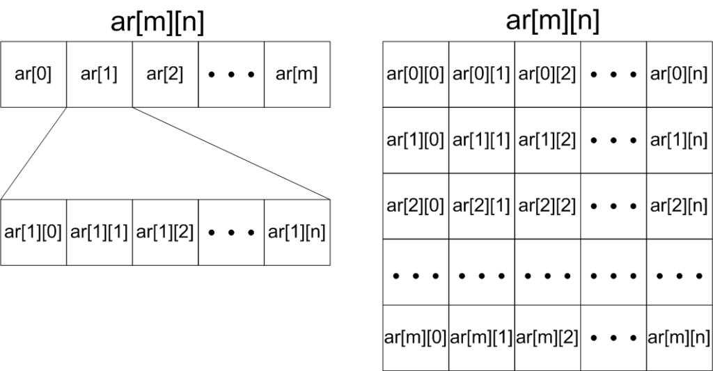
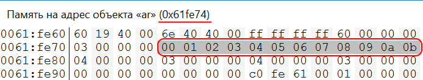
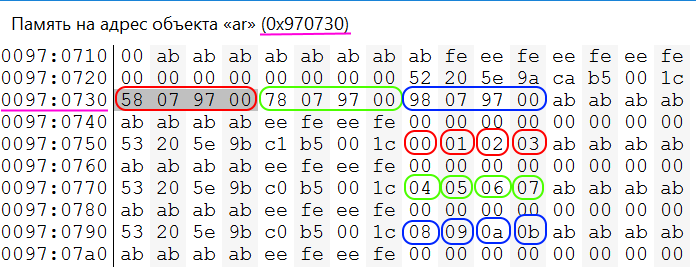

Kaidzu.com
Kaidzu.com Таймеры
Таймеры Си
Си C++
C++ Python
Python Миландр
МиландрМассивы служат для хранения множества однотипных объектов (переменные, указатели, объекты классов, структуры и т.д.)
const int size = 5; // Константную переменную можно использовать в качестве размера массива
int ar[size]; // Массив на 5 элементов
int ar[5]; // Массив на 5 элементов
int ar[5]{0}; // {0, 0, 0, 0, 0} Массив на 5 элементов инициализированных нулями
int ar[5]{2}; // {2, 0, 0, 0, 0} Массив на 5 элементов инициализированных нулями, первый элемент 2
int ar[5]{2,7}; // {2, 7, 0, 0, 0} Массив на 5 элементов инициализированных нулями, первые элементы 2 и 7
int ar[]{1, 4, 9, 16, 25}; // {1, 4, 9, 16} Массив с явной инициализацией без указания размера
std::cout << sizeof(ar) / sizeof(int) << std::endl; // 5 Можно узнать размер статического массива
std::cout << std::size(ar) << std::endl; // 5 Размер статического массива через std::size()
for(int i = 0; i < size; i++){ // Перебор элементов массива
std::cout << ar[i] << std::endl; // Печать элементов массива
}
int ar[2][3]; // Двумерный массив из двух строк (row) и трех столбцов (column)
int ar[2][3]={ // Двумерный массив с явной инициализацией
{1, 2, 3},
{4, 5, 6}
};
int ar[][3]={ // Идентично предыдущему объявлению массива ar. Первую размерность массива можно не указывать
{1, 2, 3},
{4, 5, 6,}, // Можно ставить запятые после последней цифры или скобки, для удобства добавления новых строк и столбцов
};
int ar[][3]={1, 2, 3, 4, 5, 6,}; // Идентично предыдущим объявлениям массива ar. Вложенные скобки {} необязательны.
int *ar = new int[5]; // Массив на 5 элементов
int *ar = new int(5); // То же самое. Размер массива без инициализации можно указать в скобках
int *ar = new int[5]{2}; // {2, 0, 0, 0, 0}
int *ar = new int[5]{2, 7}; // {2, 7, 0, 0, 0}
#include <iostream> // cout
void func(int *arr, int size){ // Функция принимающая массив
for(int i = 0; i < size; i++){ // Перебираем элементы массива
arr[i] = i * i; // Присваиваем значения элементам массива
}
}
int main(){
int ar_size = 5; // Размер массива
int ar[ar_size]; // Создаем массив
func(ar, ar_size); // Вызываем функцию и передаем в нее массив
for(int i = 0; i < ar_size; i++){ // Перебираем элементы массива
std::cout << ar[i] << ' '; // 0 1 4 9 16 Выводим значения массива
}
}
#include <iostream> // cout
int * func(int size){ // Функция возвращающая массив
int * arr = new int[size]; // Создаем массив в функции
// static int arr[5]; // Размер статического массива нужно указывать явно, или задавать из константной переменной или макроподстановкой
for(int i = 0; i < size; i++){ // Перебираем элементы массива
arr[i] = i * i; // Присваиваем значения элементам массива
}
return arr; // Возвращаем массив
}
int main(){
int ar_size = 5; // Размер массива
int *ar = func(ar_size); // Вызываем функцию создающую и возвращающую массив
for(int i = 0; i < ar_size; i++){ // Перебираем элементы массива
std::cout << ar[i] << ' '; // 0 1 4 9 16 Выводим значения массива
}
}

#include <iomanip> // std::setw
#include <iostream> // std::cout
int main(){
const int ROW = 3, COL = 4; // Размер статического массива
char ar[ROW][COL]; // Cоздаем массив ar
std::cout << "ar = " << (void *)ar << "\n"; // Вывод адреса массива
for(int m = 0; m < ROW; m++){ // Перебор строк
std::cout << "ar[" << m << "] = " << (void *)ar[m] << "\n"; // Вывод адреса строк
for(int n = 0; n < COL; n++){ // Перебор столбцов
ar[m][n] = m * COL + n; // Присваивание значения элементу
std::cout << "ar[" << m << "][" << n << "] = " << std::setw(2) << (int)ar[m][n] << " &ar[" << m << "][" << n << "] = " << (void *)&ar[m][n] << "\n"; //вывод значения и адреса элемента
}
}
return 0;
}
/* Вывод программы
ar = 0x61fe74
ar[0] = 0x61fe74
ar[0][0] = 0 &ar[0][0] = 0x61fe74
ar[0][1] = 1 &ar[0][1] = 0x61fe75
ar[0][2] = 2 &ar[0][2] = 0x61fe76
ar[0][3] = 3 &ar[0][3] = 0x61fe77
ar[1] = 0x61fe78
ar[1][0] = 4 &ar[1][0] = 0x61fe78
ar[1][1] = 5 &ar[1][1] = 0x61fe79
ar[1][2] = 6 &ar[1][2] = 0x61fe7a
ar[1][3] = 7 &ar[1][3] = 0x61fe7b
ar[2] = 0x61fe7c
ar[2][0] = 8 &ar[2][0] = 0x61fe7c
ar[2][1] = 9 &ar[2][1] = 0x61fe7d
ar[2][2] = 10 &ar[2][2] = 0x61fe7e
ar[2][3] = 11 &ar[2][3] = 0x61fe7f
*/
Размещение массива в памяти

#include <iomanip> // std::setw
#include <iostream> //std::cout
using namespace std;
int main(){
int row = 3, col = 4; // Размер массива
char **ar = new char*[row]; // Создаем указатели на строки (массив в котором будут содержаться массивы)
cout << "ar = " << (void *)ar << endl;
for(int m = 0; m < row; m++){ // Перебор строк
ar[m] = new char[col]; // Создаем столбцы
}
for(int m = 0; m < row; m++){ // Перебор строк
cout << "ar[" << m << "] = " << (void *)ar[m] <<endl; // Вывод адреса строки
for(int n = 0; n < col; n++){ // Перебор столбцов
ar[m][n] = m * col + n; // Присваивание значения элементу
cout << "ar[" << m << "][" << n << "] = " << setw(2) << (int)ar[m][n] << " addr = " << (void *)&ar[m][n] << endl; // Вывод значения и адреса элемента
}
}
for(int m = 0; m < row; m++){ // Перебор строк
delete [] ar[m]; // Освобождаем память занятую строками
}
delete [] ar; // Освобождаем память выделенную под указатели на строки
return 0;
}
/* Вывод программы
ar = 0x970730
ar[0] = 0x970758
ar[0][0] = 0 &ar[0][0] = 0x970758
ar[0][1] = 1 &ar[0][1] = 0x970759
ar[0][2] = 2 &ar[0][2] = 0x97075a
ar[0][3] = 3 &ar[0][3] = 0x97075b
ar[1] = 0x970778
ar[1][0] = 4 &ar[1][0] = 0x970778
ar[1][1] = 5 &ar[1][1] = 0x970779
ar[1][2] = 6 &ar[1][2] = 0x97077a
ar[1][3] = 7 &ar[1][3] = 0x97077b
ar[2] = 0x970798
ar[2][0] = 8 &ar[2][0] = 0x970798
ar[2][1] = 9 &ar[2][1] = 0x970799
ar[2][2] = 10 &ar[2][2] = 0x97079a
ar[2][3] = 11 &ar[2][3] = 0x97079b
*/
Размещение массива в памяти

Двумерный массив представляет собою указатель на блок данных в памяти (в случае динамического массива блоки памяти). Можно обращаться к его элементам можно как к одномерному массиву или указателю с использованием адресной арифметики. Следующие выражения идентичны:
ar[m][n] <=> *(ar[m] + n) <=> *(*(ar + m) + n)
&ar[m][n] <=> ar[m] + n <=> *(ar + m) + n